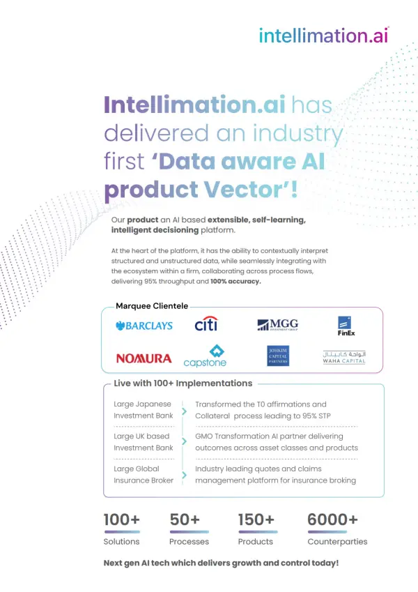
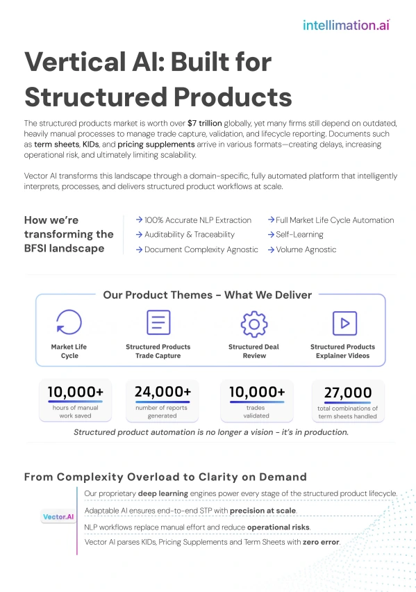
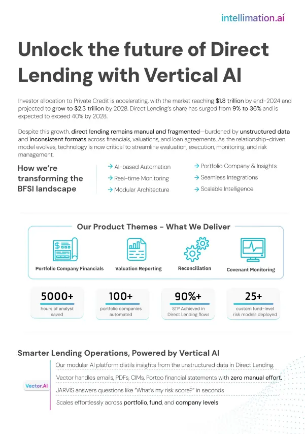
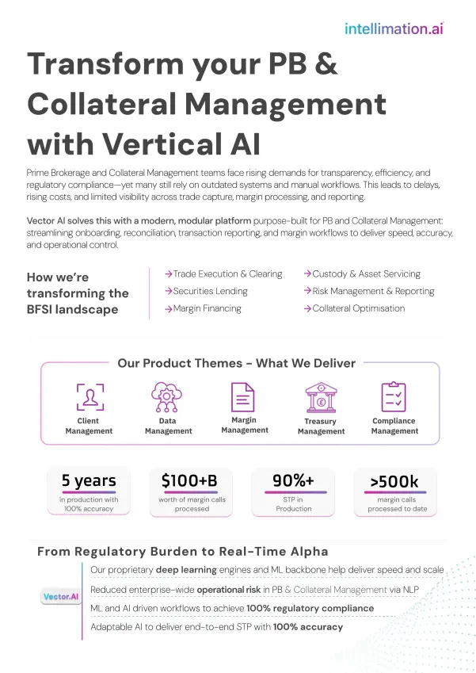

Enterprise AI
Product Marketing
Product Marketing, Built From Zero · intellimation.ai
Product Marketing, Built From Zero · intellimation.ai
intellimation.ai builds proprietary AI for banking and financial services, an industry that runs on trust. Buyers don't take technical claims at face value. When I joined, the commercial team was already running roughly five enterprise demos a week, but there was no consistent product positioning behind those conversations and no enterprise-ready asset library to draw from.
As the only person in the role, reporting directly to the CEO and CFO, product marketing was established from the ground up, centred around a repeatable messaging framework across 4 Vertical AI product lines: Structured Products, Collateral Management, Direct Lending and Prime Brokerage. The framework and supporting assets were designed and produced in Figma, with every piece reviewed alongside the CEO and Director of AI Products for technical accuracy. A Voice of the Customer initiative provided an ongoing feedback loop between customer conversations, product positioning and marketing. The result was a credible, clear and reusable product marketing system built to evolve with every conversation it supported.
Some visuals are editorial recreations created for portfolio presentation. Original client materials have been anonymised or recreated where necessary due to NDA and confidentiality obligations. All project work, deliverables and outcomes reflect genuine professional experience.
Every product line started the same way: understanding not just how it worked, but why it mattered to the person buying it.
Every brochure began with a discovery session involving the CEO, the Director of AI Products and subject matter experts. Using a structured framework, I worked through target audience, customer pain points, value proposition, competitive differentiation and commercial objectives for each product line.
Those sessions became a single messaging framework per vertical, and that framework was the foundation for everything that followed. Brochures, presentations, website content, LinkedIn thought leadership, solution briefs and sales collateral all traced back to the same source.
Four vertical-specific one-pagers, one for each BFSI product line, designed and produced in Figma from the same messaging framework. Still live on intellimation.ai today.




Every brochure paired the product story with quantified business impact specific to that vertical: straight-through processing (STP) rates, hours of manual work saved, margin calls or transactions processed. Proof, not just positioning.
See the brochures live on intellimation.ai ↗Product marketing sat at the centre of the business, not on the edge of it.
Every asset went through review with the CEO and Director of AI Products before it reached a customer, checked for technical accuracy and commercial positioning. I worked with the CFO on CRM, lead generation and executive events, and with the Director of AI Products to translate complex AI capabilities into language a financial services buyer would trust.
Insights from customer conversations were shared with Product and Engineering as well as Sales, so the same feedback that shaped a brochure also reached the people building the product.
The company's first formal system for turning real sales conversations into product marketing intelligence.
Every demo, POC and client meeting fed the same repository. Over the engagement I documented and categorised more than 700 customer questions into six recurring themes, then shared the findings across product, engineering and sales.
Those insights didn't just improve the next brochure. They continuously refined product positioning, sharpened messaging, reshaped demo storylines and updated website content, and they informed every marketing asset that came after. Nothing stayed static. Everything evolved with the next conversation.
Explore the interactive workspace ↗Not a set of deliverables. A system that kept working after I built it.
Rather than creating standalone marketing assets, I established a repeatable product marketing system. The messaging framework, the enterprise asset library and the Voice of the Customer initiative became resources the business could keep using, for demonstrations, executive meetings, sales enablement, thought leadership and whatever product launches came next.
I'm proudest of that part of this project. Not that I made forty pieces of marketing material, but that I built the system that made the forty-first one easier than the first.